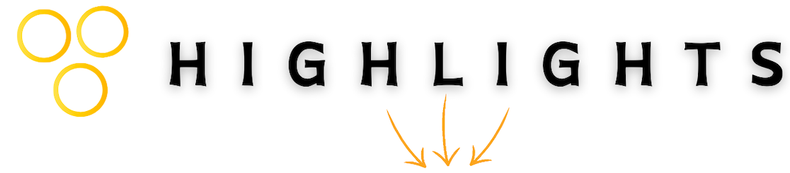
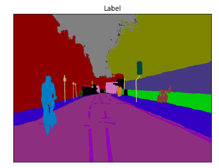
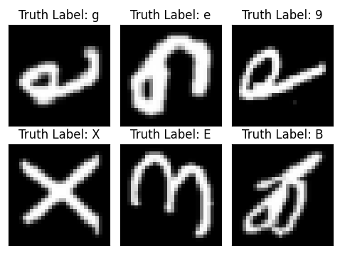

About Me
Data has always fascinated me. It is incredible how numbers can tell stories and shape the future. That was what led me to a Master's in Data Science and Artificial Intelligence, after finishing my Economics degree. For the past five years, I have been deeply engrossed in analyzing datasets, coding, and extracting actionable insights to inform strategic decisions. My skill set includes advanced proficiency in tools like Python, SQL, Excel, Power BI, and other software languages and tools.
I love the fast pace and the feeling of directly contributing to a company's success. I am eager to join a team that values innovation and data-driven strategies and tackle initiatives that deliver real, measurable results.
Bitcoin Future Price Prediction
This project employs machine learning techniques, primarily utilizing the historical Bitcoin-GBP data spanning from January 1st, 2015, to September 1st, 2023.Four models – Multilayer Perceptron (MLP), Long Short-Term Memory (LSTM) network, Random Forest Regressor, and Gradient Boosting Machine Regressor were developed to predict Bitcoin prices. The top two performers, MLP and Random Forest, from both artificial neural networks and ensemble models were selected and optimized for future price predictions, yielding promising results exceeding 99% accuracy.
Semantic Segmentation: Exploring FCN, PSPNet, and UNET Architectures
This project delves into the comparative efficacy of three prominent architectures: FCN, PSPNet, and U-Net. By implementing these models and analyzing their performance, I gain profound insights into their strengths and limitations. Exploring augmentation techniques, I uncovered a plethora of methods for manipulating and presenting images, enhancing their diversity, and enriching our understanding of segmentation challenges.